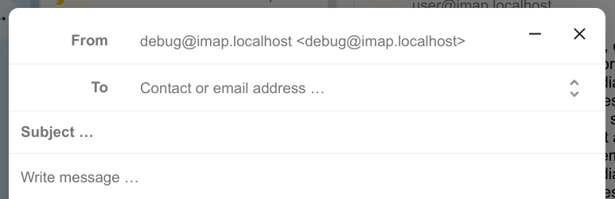
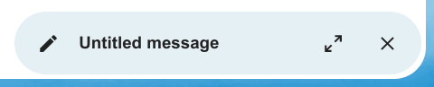

Aplikace E-mail je nainstalovaná jako součást Nextcloud Hub už ve výchozím stavu, ale může být vypnutá. Požádejte o ní případně správce vámi využívané instance.
Přednostní schránka má dvě sekce: Důležité a Ostatní. Zrpávy budou automaticky označovány jako důležité na základě toho, s jakými zprávami jste pracovali nebo je označili jako důležité. Zpočátku může být třeba důležitost měnit ručně a systém tak naučit, ale časem se tím vylepší.
Dialogové okno s editorem zpráv je možné minimalizovat v průběhu psaní nové zprávy, upravování existujícího konceptu nebo zprávy z odeslaných. Stačí kliknout na tlačítko minimalizace vpravo nahoře dialogu nebo kliknout kamkoli mimo dialog.

K minimalizované z právě se vrátíte kliknutím kamkoli na indikátor ve spodní části obrazovky.

Kliknutím na tlačítko zavřít v dialogu nebo na indikátoru v pravém dolním rohu ukončí upravování zprávy. Koncept bude automaticky uložen do schránky s koncepty.
When a message has been composed and the „Send“ button was clicked, the message is added to the outbox which can be found in the bottom left corner of the left sidebar.
You can also set the date and time for the send operation to a point in the future (see Scheduled messages)- the message will be kept in the outbox until your choosen date and time arrives, then it will be sent automatically.
The outbox is only visible when there is a message waiting to be handled by the outbox.
You can re- open the composer for a message in the outbox any time before the „send“- operation is triggered.
Poznámka
When an error occurs during sending, three error messages are possible:
Could not copy to „Sent“ mailbox
The mail was sent but couldn’t be copied to the „Sent“ mailbox. This error will be handled by the outbox and the copy operation will be tried again.
Mail server error
Sending was unsuccessful with a state than can be retried (ex: the SMTP server couldn’t be reached). The outbox will retry sending the message.
Message could not be sent
Sending might or might not have failed. The mail server can’t tell us the state of the message. Since the Mail app has no way to determine the state of the message (sent or unsent) the message will stay in the outbox and the account user has to decide how to proceed.
Některé e-mailové konference a zpravodaje umožňují snadné zrušení odběru. Pokud aplikace E-mail zjistí zprávy od takového odesilatele, zobrazí tlačítko Zrušit odebírání vedle údaje o odesilateli. Pokud chcete přestat odebírat, klikněte a potvrďte.
Odkládání zprávy či vlákna ho přesune do k tomu určené složky po dobu délky odkladu a zpráva nebo vlákno pak po jejím uplynutí bude přesunuta do původní složky.
Otevřete nabídku akcí obálky nebo vlákna
Klikněte na Odložit
Vyberte na jak dlouho má být zpráva nebo vlákno odloženo
When you open a message in the Mail app, it proposes AI-generated replies. By simply clicking on a suggested reply, the composer opens with the response pre-filled.
Poznámka
Please note that the feature has to be enabled by the administrator
Poznámka
Supported languages depend on the used large language model
Nové ve verzi 3.5: Autoresponder can follow system settings.
The autoresponder is off by default. It can be set manually, or follow the system settings. Following system settings means that the long absence message entered on the Absence settings section is applied automatically.